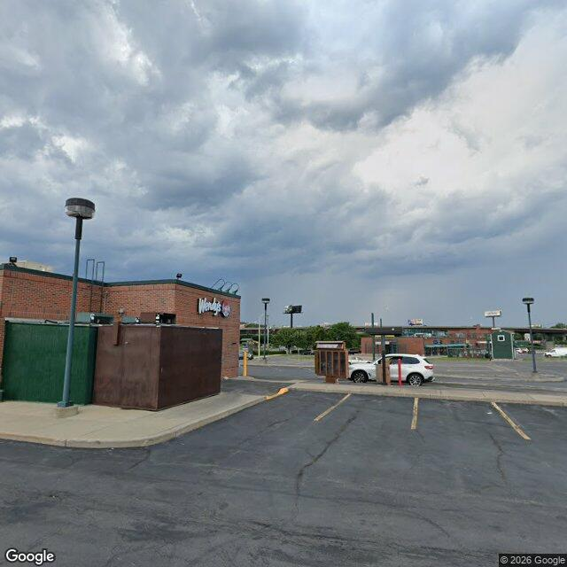

Property entry
2028 Park St
Published 2026-10-25T16:06:27+00:00
Parcel key: 0012-02-156

City records
Matches use parcel IDs, normalized addresses, or nearby coordinates. Confirm a match against the source record before relying on it. Publication dates are not source-data dates.
Vacant properties 0
No matches stored for this feed. The feed or address matching may be incomplete; this is not confirmation that no records exist.
Rental registry 0
No matches stored for this feed. The feed or address matching may be incomplete; this is not confirmation that no records exist.
Code violations 0
No matches stored for this feed. The feed or address matching may be incomplete; this is not confirmation that no records exist.
Unfit properties 1
- Latitude
- 43.07276834
- Longitude
- -76.16733512
- ObjectId
- 140
- SBL
- 001.2-02-15.6
- address
- 2028 Park St
- area_involved
- Premises
AI image observations (unverified)
These observations are generated from an image, not an inspection or an official code finding. No human verification is recorded here.
Image capture date: Not recorded. The entry publication date does not establish the age of the image.
Automated image description
The image depicts an exterior view of a property, specifically a parking lot and a building. The property appears to be well-maintained with no visible signs of disrepair or neglect.
Property type guess: commercial|mixed-use|vacant lot|unclear
Visible conditions
- the parking lot is paved and appears to be clean and well-maintained
- the building has visible signs of use, including awnings and a storefront, but does not show any signs of disrepair or neglect
Condition scores
- Roof
- good|fair|poor|not_visible|unclear
- Siding Or Facade
- good|fair|poor|not_visible|unclear
- Windows Doors
- good|fair|poor|not_visible|unclear
- Porch Or Entry
- good|fair|poor|not_visible|unclear
- Yard Or Lot
- good|fair|poor|not_visible|unclear
- Trash Debris
- none_visible|minor|major|unclear
- Vegetation Overgrowth
- none_visible|minor|major|unclear
Visible flags
- Boarded Windows Or Doors
- no|unclear
- Fire Damage Visible
- no|unclear
- Structural Damage Visible
- no|unclear
- Vacancy Signs Visible
- no|unclear
- Active Construction Visible
- no|unclear
Possible image-only flags
- cautious image-only flags not already reflected in known_data
AI review boxes
- well-maintained parking lot: The lot is clean and free of any visible signs of disrepair or neglect
Review reasons
- AI requested human review
- Possible image-only issue
Image quality
- Available
- True
- Bytes
- 49244
- Needs Rerun
- False
["The image does not provide a clear view of the building's facade, making it difficult to assess the condition of the siding or facade with certainty.", 'The image does not show the entire lot or building, and the angle of the photo may not fully capture all areas of the property.']
ACS tract context
Census Tract 1; Onondaga County; New York
- Total population
- 1225
- Median household income
- 91696
- Poverty rate
- 11.3
- Housing units
- 816
- Vacancy rate
- 2.8
- Renter-occupied share
- 7.8
- Median gross rent
- 353800
OpenStreetMap nearby
meter search radius
OpenStreetMap lookup failed: HTTP Error 406: Not Acceptable